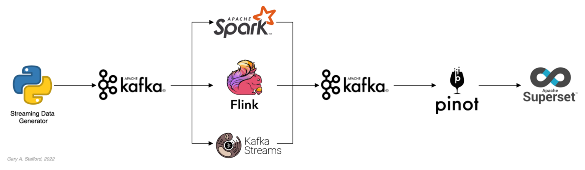
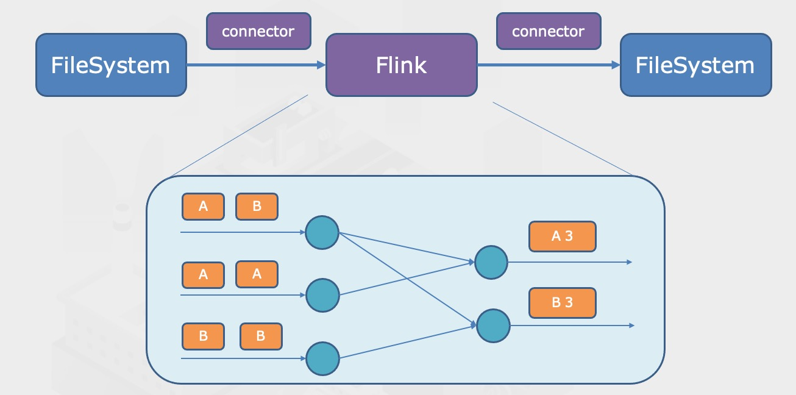
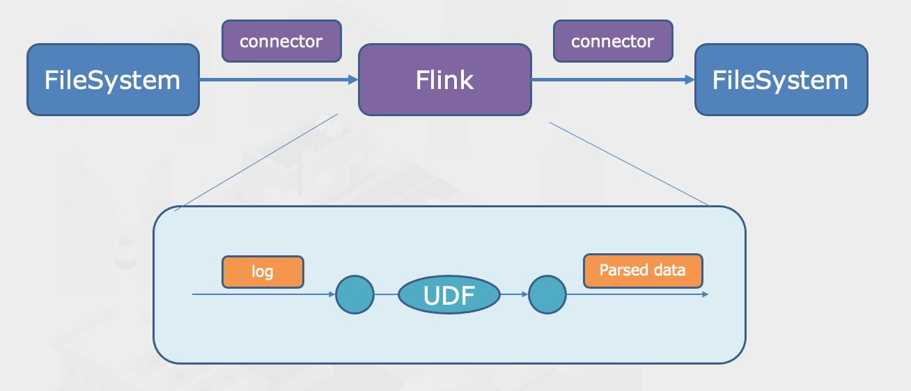
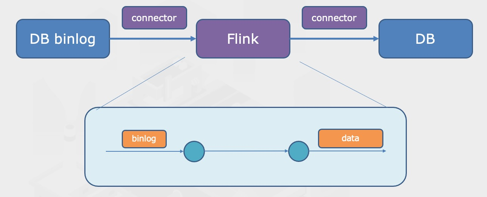
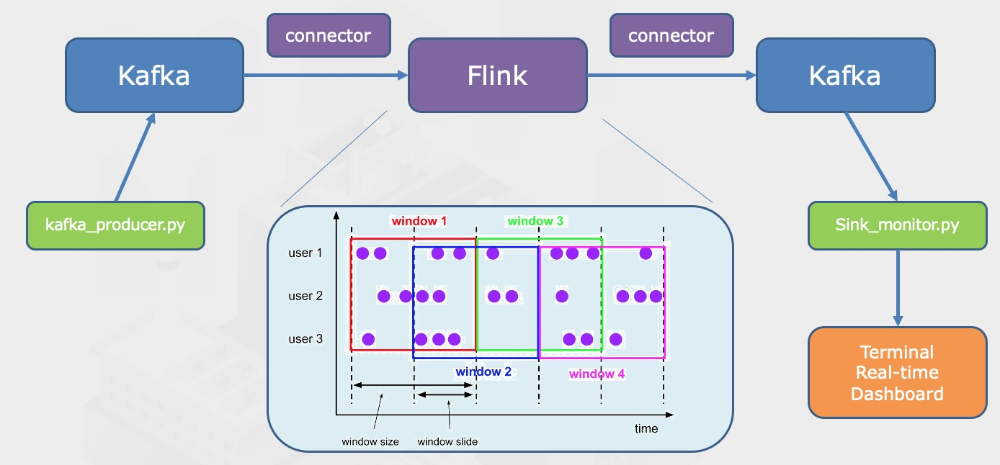
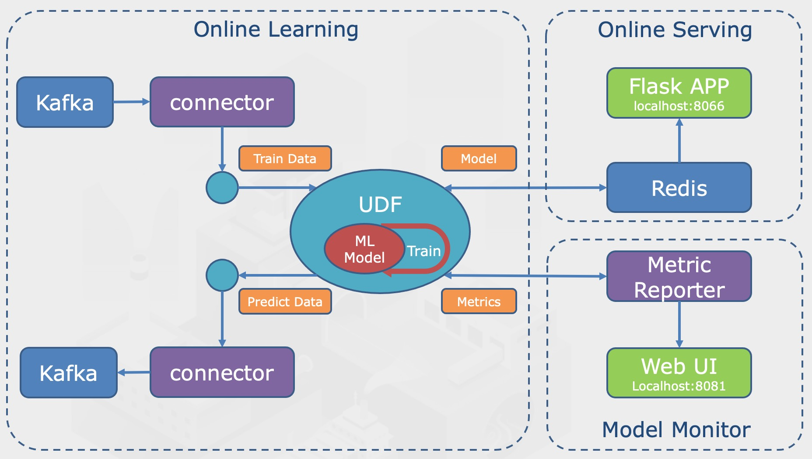

PyFlink Tutorial
PyFlink: A Big Data Processing Tool.
python
flink
kafka
tutorial

This tutorial is a copy form pyflink_learn
Import Packages
import os, shutil
from pyflink.table import BatchTableEnvironment, StreamTableEnvironment, EnvironmentSettings
from pyflink.table.udf import udf, ScalarFunction
from pyflink.table.descriptors import OldCsv, Schema, FileSystem
from pyflink.table.window import Slide
import random, numpy as np
from json import dumps
from time import sleep
from faker import Faker
from datatime import datatime
from reprint import out
import json
from kafka import KafkaProducer, KafkaConsumer
from sklearn import datasets
import redis, pickle, logging
from sklearn.linear_model import SGDClassifier
import base64
from flask_cors import CORS
from flask import request, Flask, jsonify, render_template
from PIL import Image
from svglib.svglib import svg2rlg
from reportlib.graphics import renderPM1 Blink: Batch Processing in Flink

# 1. create a batch processing environment
env_settings = EnvironmentSettings.new_instance().in_batch_mode().use_old_planner().build()
t_env = BatchTableEnvironment.create(environment_settings=env_settings)
# 2. create source table from csv (or MySQL, Kafka, Hive, etc)
dir_word = os.path.join(os.path.abspath(__file__), 'word_csv')
t_env.execute_sql(f"""
CREATE TABLE source (
id BIGINT, -- ID
word STRING, -- 单词
) WITH (
'connector' = 'filesystem',
'path' = 'file://{dir_word}',
'format' = 'csv',
)
"""
)
# 3. create sink table as result
dir_result = os.path.join(os.path.abspath(__file__), 'result')
if os.path.exists(dir_result): # remove file
if os.path.isfile(dir_result):
os.remove(dir_result)
else:
shutil.rmtree(dir_result, True)
t_env.execute_sql(f"""
CREATE TABLE sink (
word STRING, -- 单词
cnt BIGINT, -- 出现次数
) WITH (
'connector' = 'filesystem',
'path' = 'file://{dir_result}',
'format' = 'csv',
)
"""
)
# 4. Batch Process
t_env.sql_query("""
SELECT word, count(1) AS cnt
FROM source
GROUP BY word
""").insert_into('sink')
t_env.execute('t')flink run -m localhost:8081 -py batch.py2 Customize UDF Functions for Real-time Logging System

# download dependencies
pip download -d cached_dir -r requirements.txt --no-binary :all:# 1. create batch process environment
env_settings = EnvironmentSettings.new_instance().in_batch_mode().use_blink_planner().build()
t_env = BatchTableEnvironment.create(environment_settings)
t_env.get_config().get_configuration().set_boolean("python.fn-execution.memory.managed", True)
# 2. install third-party libraries from downloaded files
t_env.set_python_requirements("requirements.txt", "cached_dir")
# 3. create source table from data sources
dir_log = os.path.join(os.path.abspath(__file__), 'syslog.txt')
t_env.connect(FileSystem().path.(dir_log)) \
.with_format(OldCsv()
.line_delimiter('\n')
.field('line', DataTypes.STRING()))\
.with_schema(Schema()
.field('line', DataTypes.STRING()))\
.create_temporary_table('source')
# 4. create sink table
dir_result = os.path.join(os.path.abspath(__file__), 'result')
if os.path.exists(dir_result):
if os.path.isfile(dir_result):
os.remove(dir_result)
else:
shutil.rmtree(dir_result)
t_env.connect(FileSystem().path(dir_result))\
.with_format(OldCsv() # define data format
.field('topic', DataTypes.STRING()))
.with_schema(Schema() # define table structures
.field('topic', DataTypes.STRING()))
.create_temporary_table('sink')
# 5. register UDF
@udf(input_types=[DataTypes.STRING()], result_type=DataTypes.STRING())
def get_topic(line):
import re
if 'IN=' in line and 'OUT=' in line and 'MAC=' in line:
return 'syslog-iptables'
elif '=======================================' in line or re.search(r'localhost (.+?): \[', line, re.M | re.I):
return 'syslog-user'
else return 'syslog-system'
# so many regex ...
t_env.register_function('get_topic', get_topic)
# 6. Batch Processing
t_env.from_path('source')\
.select('line, get_topic(line) AS topic') \
.select('topic, ')
.execute_insert('sink')3 Real-time Sync with MySQL

# 1. create Blink stream environment
env_settings = EnvironmentSettings.new_instance().in_streaming_mode().use_blink_planner().build()
t_env = StreamTableEnvironment.create(environment_settings=env_settings)
# 2. create jar dependencies
jars=[]
for file in os.listdir(os.path.abspath(os.path.dirname(__file__))):
if file.endswith('.jar'):
jars.append(os.path.abspath(file))
str_jars=';'.join(['file://'+jar for jar in jars])
t_env.config().get_configuration().set_string("pipeline_jars", str_jars)
# 3. create source table from MySQL
t_env.execute_sql(f"""
CREATE TABLE source (
id INT, -- ID
name STRING, -- Name
) WITH (
'connector' = 'mysql-cdc',
'hostname' = '127.0.0.1',
'port' = '3306',
'database-name' = 'flink',
'table-name' = 'case3',
'username' = 'root',
'password' = 'root',
)
"""
)
# check table
t_env.from_path('source').print_schema()
t_env.from_path('source').to_pandas()
# 4. create sink table
t_env.execute_sql(f"""
CREATE TABLE sink (
id INT, -- ID
name STRING, -- Name
PRIMARY KEY (id) NOT ENFORCED -- define primary key
) WITH (
'connector' = 'jdbc',
'url' = 'jdbc:mysql://127.0.0.1:3307/flink',
'driver' = 'com.mysql.cj.jdbc.Driver',
'table-name' = 'case3',
'username' = 'root',
'password' = 'root',
)
""")
# 5. batch processing
t_env.from_path('source').insert_into('sink')4 Real-time Ranking

4.1 Kafka Data Producer
# setting
seed=2020
num_users=50
max_msg_per_second=20
run_seconds=3600
topic='user_action'
bootstrap_servers = ['localhost:9092']
fake = Faker(locale='zh_CN')
Faker.seed(seed)
random.seed(seed)
#
class UserGroup:
def __init__(self):
# different user, different probability
self.users = [self.gen_male() if random.random() < 0.6 else self.gen_female() for _ in range(num_users)]
prob = np.cumsum(np.random.uniform(1, 100, num_users)) # sum of probabilities
self.prob = prob/prob.max() # to 0 - 1
@staticmethod
def gen_male():
return {'name': fake.name_male(), 'sex':'男'}
@staticmethod
def gen_female():
return {'name': fake.name_female(), 'sex':'女'}
def get_user(self):
r = random.random()
index = np.searchsorted(self.prob, r) # insert into sorted array, return index where self.prob[index-1]<r<self.prob[index]
return self.users[index]
def write_data():
group = UserGroup()
start_time = datatime.now()
# init producer
producer = KafkaProducer(
bootstrap_servers = bootstrap_servers,
value_serializer=lambda x: dumps(x).encode('utf-8'),
)
while True:
now = datatime.now()
# produce data to kafka
user = group.get_user()
cur_data = {
'ts': now.strftime('%Y-%m-%d %H:%M:%S'),
'name': user['name'],
'sex': user['sex'],
'action': 'click' if random.random() < 0.9 else 'scroll',
'is_delete': 0 if random.random() < 0.9 else 1,
}
producer.send(topic, value=cur_data)
# terminate when running time > run_seconds
if (now - start_time).seconds > run_seconds:
break
sleep(1 / max_msg_per_second)4.2 Kafka Monitor
Source Table Monitor
topic = 'user_action'
bootstrap_servers = ['localhost:9092']
group_id = 'group7'
consumer = KafkaConsumer(
topic,
group_id=group_id,
bootstrap_servers=bootstrap_servers,
auto_offset_reset='latest'
)
for msg in consumer:
print(msg.value.decode('utf-8').encode('utf-8').decode('unicode_escape'))Sink Table Monitor
topic = 'click_rank'
bootstrap_servers=['localhost:9092']
group_id = 'group7'
consumer = KafkaConsumer(
topic,
group_id = group_id,
bootstrap_servers = bootstrap_servers,
auto_offset_reset='latest',
)
with output(output_type='list', initial_len=22, interval=0) as output_lines:
# 5 men 5 women
output_lines[0] = '=== 男 ==='
output_lines[6] = '=== 女 ==='
for msg in consumer:
data = json.loads(msg.value)
start_index = 1 if data['sex'] == '男' else 7
rank = json.loads('[' + data['top10'] + ']')
for i in range(5):
index = start_index + i
if i < len(rank):
name = list(rank[i].keys())[0]
value = list(rank[i].values())[0]
output_lines[index] = f'{name:6s} {value}'
else:
output_lines[index] = ''4.3 Stream Processing
# settings
kafka_servers = 'localhost:9092'
kafka_consumer_group_id = 'group8'
source_topic = 'user_action'
sink_topic = 'click_rank'
# 1. create Blink stream process environment
env=StreamExecutionEnvironment.get_execution_environment()
env_settings = EnvironmentSettings.new_instance().in_streaming_mode().use_blink_planner().build()
t_env = StreamTableEnvironment.create(env, environment_settings=env_settings)
t_env.get_config().get_configuration().set_boolean('python.fn-execution.memory.managed', True)
# 2. add dependencies and register UDF
dir_kafka_sql_connect = os.path.join(os.path.abspath(os.path.dirname(__file__)), 'flink-sql-connector-kafka_2.11-1.11.2.jar')
t_env.get_config().get_configuration().set_string('pipeline.jars', 'file://' + dir_kafka_sql_connect)
dir_java_udf = os.path.join(os.path.abspath(os.path.dirname(__file__)), 'flink-udf-1.0-SNAPSHOT.jar')
t_env.get_config().get_configuration().set_string('pipeline.classpaths', 'file://' + dir_java_udf)
t_env.register_java_function('getTopN', 'com.flink.udf.TopN')
# 3. create source table
t_env.execute_sql(f"""
CREATE TABLE source (
name VARCHAR,
sex VARCHAR,
action VARCHAR,
is_delete BIGINT,
ts TIMESTAMP(3),
WATERMARK FOR ts AS ts - INTERVAL '5' SECOND
) with(
'connector' = 'kafka',
'topic' = '{source_topic}',
'properties.bootstrap.servers' = '{kafka_servers}',
'properties.group.id' = '{kafka_consumer_group_id}',
'scan.startup.mode' = 'latest-offset',
'json.fail-on-missing-field' = 'false',
'json.ignore-parse-errors' = 'true',
'format' = 'json',
)
""")
# 4. create sink table
t_env.execute_sql(f"""
CREATE TABLE sink (
sex STRING,
top10 STRING,
start_time TIMESTAMP(3),
end_time TIMESTAMP(3),
) with(
'connector' = 'kafka',
'topic' = '{sink_topic}',
'properties.bootstrap.servers' = '{kafka_servers}',
'properties.group.id' = '{kafka_consumer_group_id}',
'scan.startup.mode' = 'latest-offset',
'json.fail-on-missing-field' = 'false',
'json.ignore-parse-errors' = 'true',
'format' = 'json',
)
""")
# 5. stream processing
# HOP is like rolling window(timestamp, step, window_length)
t_env.sql_query("""
SELECT
sex,
getTopN(name, 10, 1) AS top10,
HOP_START(ts, INTERVAL '1' SECOND, INTERVAL '60' SECOND) AS start_time,
HOP_END(ts, INTERVAL '1' SECOND, INTERVAL '60' SECOND) AS end_time
FROM
source
WHERE
action='click'
AND is_delete=0
GROUP BY
sex,
HOP(ts, INTERVAL '1' SECOND, INTERVAL '60' SECOND)
""").insert_into("sink")
t_env.execute('Top10 User Click')
# 5 Online Machine Learning

5.1 Kafka Data Producer
# settings
max_msg_per_second = 10
topic = 'handwritten_digit'
bootstrap_servers = ['localhost:9092']
def write_data():
digits = datasets.load_digits()
all_x = digits.data.astype(int)
all_y = digits.target.astype(int)
producer = KafkaProducer(
bootstrap_servers = bootstrap_servers,
value_serializer = lambda x: dumps(x).encode('utf-8')
)
while True:
idx = np.arange(digits.data.shape[0])
np.random.shuffle(idx)
all_x = all_x[idx]
all_y = all_y[idx]
for x, y in zip(all_x, all_y):
cur_data = {
'ts': datetime.now().strftime('%Y-%m-%d %H:%M:%S'),
'x': x.tolist(),
'actual_y': int(y)
}
producer.send(topic, value=cur_data)
sleep(1/ max_msg_per_second)
write_data()5.2 Kafka Data Consumer
# 1. create Blink Stream Processing Environment
env = StreamExecutionEnvironment.get_execution_environment()
env_settings = EnvironmentSettings.new_instance().in_streaming_mode().use_blink_planner().build()
t_env = StreamTableEnvironment.create(env, environment_settings=env_settings)
t_env.get_config().get_configuration().set_boolean('python.fn-execution.memory.managed', True)
# 2. Load Dependencies
dir_kafka_sql_connect = os.path.join(os.path.abspath(os.path.dirname(__file__)), 'flink-sql-connector-kafka_2.11-1.11.2.jar')
t_env.get_config().get_configuration().set_string('pipeline.jars', 'file://'+ dir_kafka_sql_connect)
dir_requirements = os.path.join(os.path.abspath(os.path.dirname(__file__)), 'requirements.txt')
dir_cache = os.path.join(os.path.abspath(os.path.dirname(__file__)), 'cached_dir')
if os.path.exists(dir_requirements):
if os.path.exists(dir_cache):
t_env.set_python_requirements(dir_requirements, cached_dir)
# 3. register UDF
class Model(ScalarFunction):
def __init__(self):
# load model
self.model_name = 'online_ml_model'
self.redis_params = dict(host='localhost', password='redis_password', port='6379', db=0)
self.clf = self.load_model()
self.interval_dump_seconds = 30
self.last_dump_time = datetime.now()
self.classes = list(range(10))
self.metric_counter=None
self.metric_predict_acc = 0
self.metric_distribution_y = None
self.metric_total_10_sec = None
self.metric_right_10_sec = None
def open(self, function_context):
# register metrics
metric_group = function_context.get_metric_group().add_group('online_ml')
self.metric_counter = metric_group.counter('sample_count')
metric_group.gauge('prediction_acc', lambda: int(self.metric_predict_acc*100))
self.metric_distribution_y = metric_group.distribution('metric_distribution_y')
self.metric_total_10_sec = metric_group.meter('total_10_sec', time_span_in_seconds=10)
self.metric_right_10_sec = metric_group.meter('right_10_sec', time_span_in_seconds=10)
def eval(self, x, y):
# x: 1-dim gray value
# y: 0-9
self.clf.partial_fit([x], [y], classes=self.classes) # 1dim to 2dim
self.dump_model() # save to redis
y_pred = self.clf.predict([x])[0]
self.metric_counter.inc(1)
self.metric_total_10_sec.mark_event(1)
if y_pred == y:
self.metric_right_10_sec.mark_event(1)
self.metric_predict_acc = self.metric_right_10_sec.get_count() / self.metric_total_10_sec.get_count()
self.metric_distribution_y.update(y)
return y_pred
def load_model(self)
r = redis.StrictRedis(**self.redis_params)
clf = None
try:
clf=pickle.loads(r.get(self.model_name))
except TypeError:
logging.info('no model in redis, init new model...')
except (redis.exceptions.RedisError, TypeError, Exception):
logging.warning('redis error, init new model...')
finally:
clf = clf or SGDClassifier(alpha=0.01, loss='log', penalty='l1')
return clf
def dump_model(self):
if (datetime.now() - self.last_dump_time).seconds >= self.interval_dump_seconds:
r = redis.StrictRedis(**self.redis_params)
try:
r.set(self.model_name, pickle.dumps(self.clf, protocol = pickle.HIGHEST_PROTOCOL))
except (redis.exceptions.RedisError, TypeError, Exception):
logging.warning('redis error, failed to store model...')
self.last_dump_time = datetime.now()
model = udf(Model(), input_types=[DataTypes.ARRAY(DataTypes.INT()), DataTypes.TINYINT()], result_type=DataTypes.TINYINT())
t_env.register_function('train_and_predict', model)
# 4. create source table
t_env.execute_sql(f"""
CREATE TABLE source (
x ARRAY<INT>,
actual_y TINYINT,
ts TIMESTAMP(3),
) with (
'connector' = 'kafka',
'topic' = '{source_topic}',
'properties.bootstrap.servers' = '{kafka_servers}',
'properties.group.id' = '{kafka_consumer_group_id}',
'scan.startup.mode' = 'latest-offset',
'json.fail-on-missing-field' = 'false',
'json.ignore-parse-errors' = 'true',
'format' = 'json'
)
"""
)
# 5. create sink table
t_env.execute_sql(f"""
CREATE TABLE sink (
x ARRAY<INT>
actual_y TINYINT,
predict_y TINYINT,
) with (
'connector' = 'kafka',
'topic' = '{sink_topic}',
'properties.bootstrap.servers' = '{kafka_servers}',
'properties.group.id' = '{kafka_consumer_group_id}',
'scan.startup.mode' = 'latest-offset',
'json.fail-on-missing-field' = 'false',
'json.ignore-parse-errors' = 'true',
'format' = 'json'
)
"""
)
# 6. stream processing
t_env.sql_query("""
SELECT
x,
actual_y,
train_and_predict(x, actual_y) AS predict_y
FROM
source
""").insert_into("sink")
t_env.execute('Classifier Model Train')5.3 Model Serving via Flask
# settings
redis_params = dict(
host='localhost',
password='redis_password',
port=6379,
db=0
)
model_key = 'online_ml_model'
# create app
app = Flask(__name__)
CORS(app)
# model
clf = None
def load_latest_clf_model():
r = redis.StrictRedis(**redis_params)
model=None
try:
model=pickle.loads(r.get(model_key))
except TypeError:
logging.exception('No model in redis, maybe key error')
except (redis.exceptions.RedisError, TypeError, Exception) as err:
logging.exception(f'RedisError: {err}')
return model
# raw data to input
def format_svg_base64(s: str) -> np.array:
# base64 string to svg to 8*8 array to 1-dim array
# base64 to svg
with open('digit.svg', 'wb') as f:
f.write(base64.b64decode(s))
# svg to png
drawing = svg2rlg('digit.svg')
renderPM.drawToFile(drawing, 'digit.svg', fmt='png')
# png to 8 * 8
target_w, target_h = 8, 8
png = Image.open('digit.png')
w, h = png.size
scale = min(target_w/ w, target_h/ h)
new_w, new_h = int(w*scale, h*scale)
png=png.resize((new_w, new_h), Image.BILINEAR)
new_png = Image.new('RGB', (target_w, target_h), (255,255,255)) # create blank img
new_png.paste(png, ((target_w-new_w)//2, (target_h-new_h)//2)) # copy to center
# convert black to white, value to 0-16, size to 1*64
array = 255 - np.array(new_png.convert('L'))
array = (array/255) * 16
array = array.reshape(1, -1)
return array
@app.route('/')
def home():
return render_template('web.html')
@app.route('/predict', methods=['POST'])
def predict():
global clf
img_string =request.form['imgStr']
data = format_svg_base64(img_string) # feature engineering
model = load_latest_clf_model() # model loading
clf = model or clf
predict_y = int(clf.predict(data)[0])
return jsonify({'success':True, 'predict_result':predict_y}), 201
if __name__ == '__main__':
app.run(host='127.0.0.1', port=8066, debug=True)5.4 Retrain Model
redis_params = dict(
host='localhost',
password='redis_password',
port=6379,
db=0
)
r = redis.StrictRedis(**redis_params)
try:
model=r.ping()
except (redis.exceptions.RedisError, TypeError, Exception)as err:
raise Exception(f'cannot connect to redis:{err}')
if len(sys.argv) == 1: # delete whole database when no arguments sent in
r.flushdb()
else:
for key in sys.argv[1:]: # delete specific key
if r.exists(key):
r.delete(key)